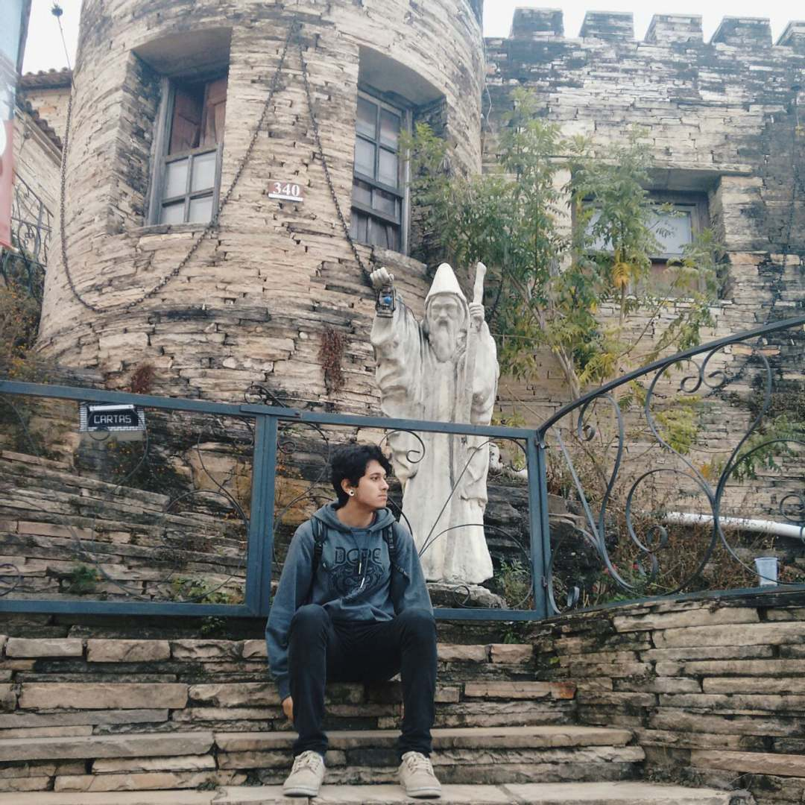

printf("Olar");
Me chamo Mateus Machado, trabalho atualmente como Software Tester, graduando em Tecnologia de Banco de Dados. Desenvolvo para projetos pessoais no tempo livre e no tempo mais livre toco violão e faço outras coisas de humano :)

-

Técnico em Redes de Computadores pela Etec Cônego José Bento
Período: 2016 - 2017 -
Graduando em Tecnologia de Banco de Dados pela Fatec São José dos Campos
Período: 2018 - Atualmente -
Tester de Software na DeMaria
Período: 2017 - Atualmente